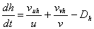
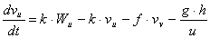
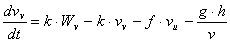

Figure 4.4. Ecospace advection model interface
Advection processes are critical for productivity in most ocean areas. Currents deliver planktonic production to reef areas at much higher rates than would be predicted from simple turbulent mixing processes. Upwelling associated with movement of water away from coastlines delivers nutrients to surface waters, but the movement of nutrient rich water away from upwelling locations means that production and biomass may be highest well away from the actual upwelling locations. Convergence (down-welling) zones represent places where planktonic production from surrounding areas is concentrated, creating special opportunities for production of higher trophic levels.
Ecospace provides a user interface for sketching general current patterns or wind/geostrophic forcing patterns for surface currents. Based on these patterns Ecospace calculates equilibrium horizontal flow and upwelling/down-welling velocity fields that maintain continuity (water mass balance) and effects of Coriolis force. That is, the advection field is calculated by solving the linearized pressure field and velocity equations df / dt = 0, dvu / dt = 0, dvv / dt = 0 across the faces of each Ecospace grid (u,v) cell, where f is sea surface anomaly, the v’s are horizontal and velocity components (u, v directions) and the rate equations at each cell face satisfy (omitting grid size scaling factors for clarity):

Eq. 74

Eq. 75

Eq. 76Here, the W’s represent the user sketched forcing or general circulation field, h sea surface anomaly, k represents bottom friction force, f the Coriolis force, D represents downwelling/upwelling rate, and g acceleration due to sea surface slope.
Solving these equations for equilibrium is not meant to be a replacement for more elaborate advection models; generally the Wu and Wv need to be provided either by such models or by direct analysis of surface current data, so the Ecospace solution scheme is only used to assure mass balance and correct for ‘local’ features caused by bottom topography and Coriolis forces. That is, absent shoreline, bottom, and sea surface anomaly (h) effects, the equilibrium velocities are just vu = Wu, vv = Wv up to corrections for Coriolis force. We could just allow users to input the W fields and then calculate upwelling/downwelling rates needed to satisfy these, but solving the equations using general forcing sketches of W patterns allows us to internally correct for factors such as topographic steering of currents near shorelines, without demanding that the user enter W fields that precisely maintain mass balance (and/or correct upwelling/downwelling velocities) absent any correction scheme.
Once an advection pattern has been defined, the user can specify which biomass pools are subject to the advection velocities (vu,vv field) in addition to movement caused by swimming and/or turbulent mixing. This allows examination of whether some apparent ‘migration’ and concentration patterns of actively swimming organisms, (e.g., tuna aggregations at convergence zones) might in fact be due mainly to random swimming combined with advective drift.
Advection fields can be read from text files. The procedure for this is as follows:
Create a .txt file, (e.g., in Notepad) with the following structure:
Number of columns in Ecospace basemap (nRow) ; Number of columns in Ecospace basemap (nCol)
Number of Months
(For each of the months specify the following:
Month Number
(For this month specify for 0 to nRow + 1, and for 0 to nCol+1, unit: m/s)
Current X-velocity, Current Y-velocity
(Repeat this for all months)
Currents for the Central Pacific may be obtained in a suitable format from http://www.oscar.noaa.gov/datadisplay/index.html)
Figure 4.4. Ecospace advection model interface